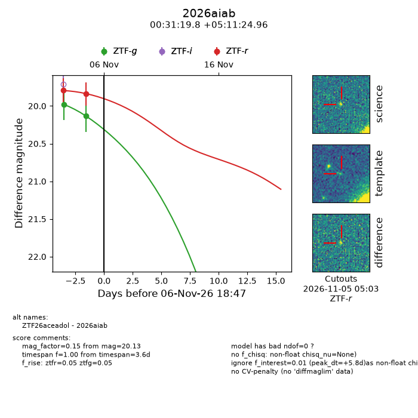
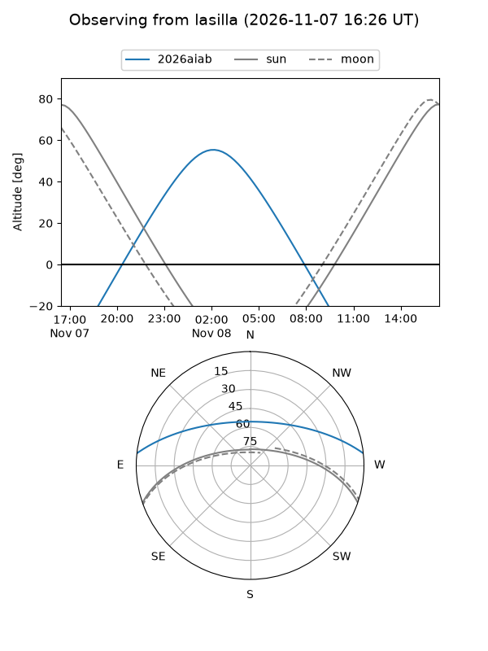
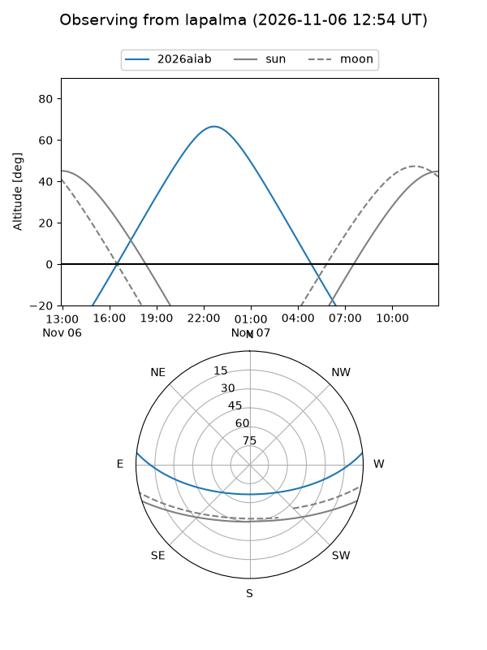
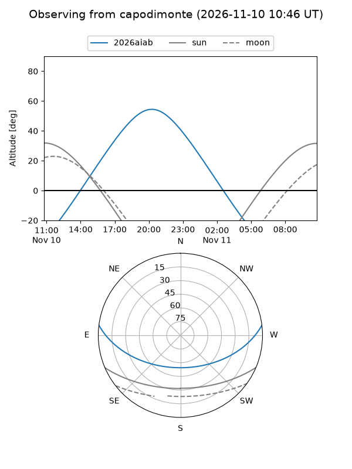
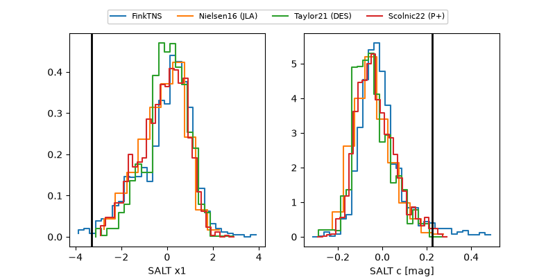

2026aiab
Target 2026aiab at 2026-11-06 18:49
Aliases and brokers:
FINK-ZTF: ztf.fink-portal.org/ZTF26aceadol
Lasair-ZTF: lasair-ztf.lsst.ac.uk/objects/ZTF26aceadol
ALeRCE-ZTF: alerce.online/object/ZTF26aceadol
YSE-PZ: ziggy.ucolick.org/yse/transient_detail/2026aiab
TNS name: wis-tns.org/object/2026aiab
Direct TNS query: direct search
alt names
ZTF26aceadol (ztf,fink_ztf)
2026aiab (tns,yse)
Coordinates:
equatorial (ra, dec) = 7.8325,+5.19027
equatorial (HMS+DMS) = 00:31:19.80,+05:11:24.96
galactic (l, b) = (113.6316,-57.31793)
Flags:
peak dt: +5.8
Photometry:
last ztfg=20.13, ztfr=19.84
2 ztfg, 2 ztfr detections
Lightcurve

Visibility



Additional plots
